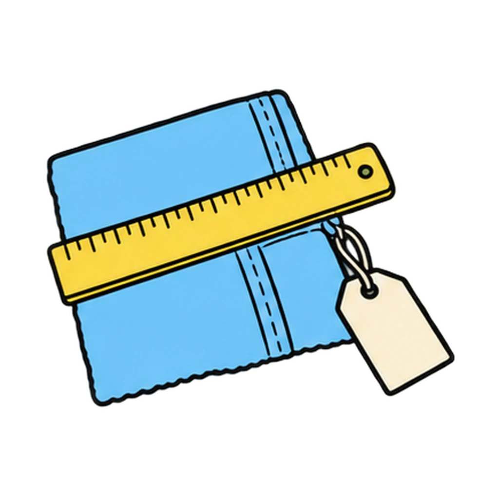
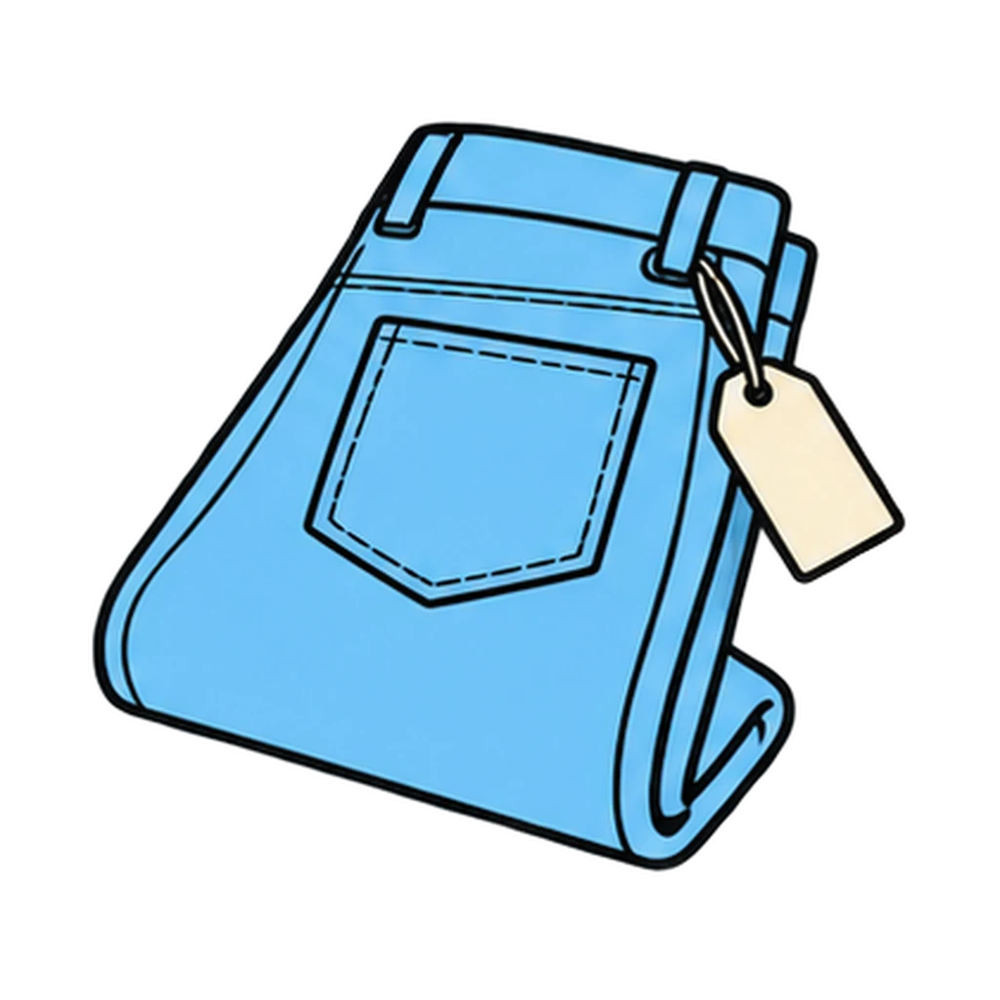
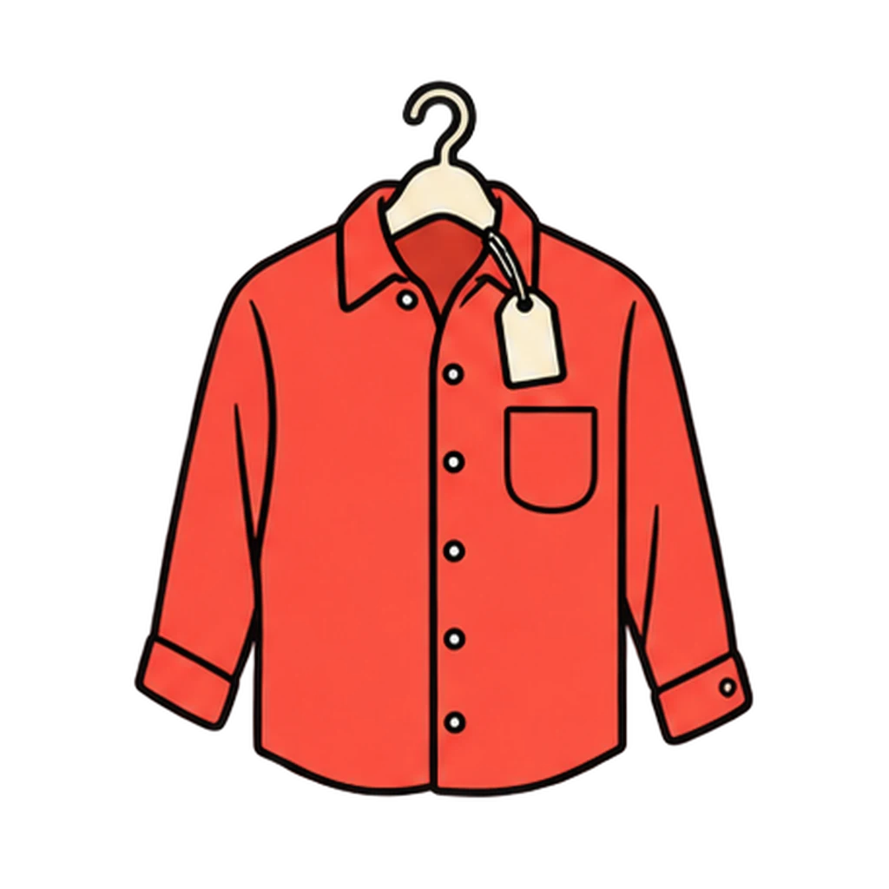
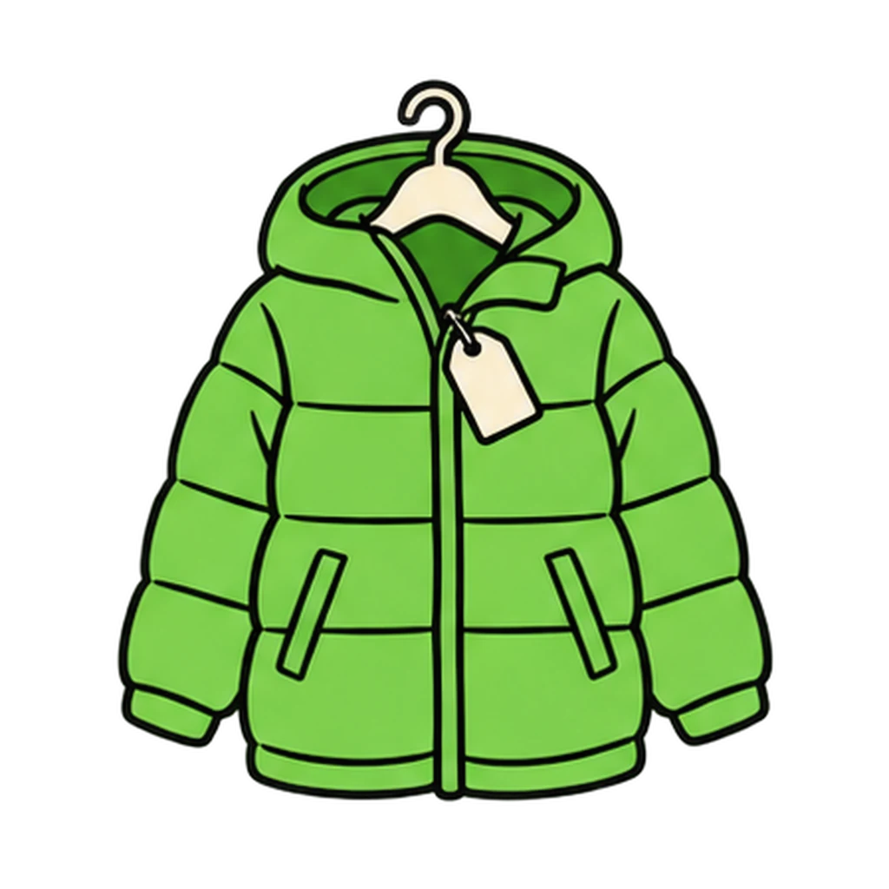
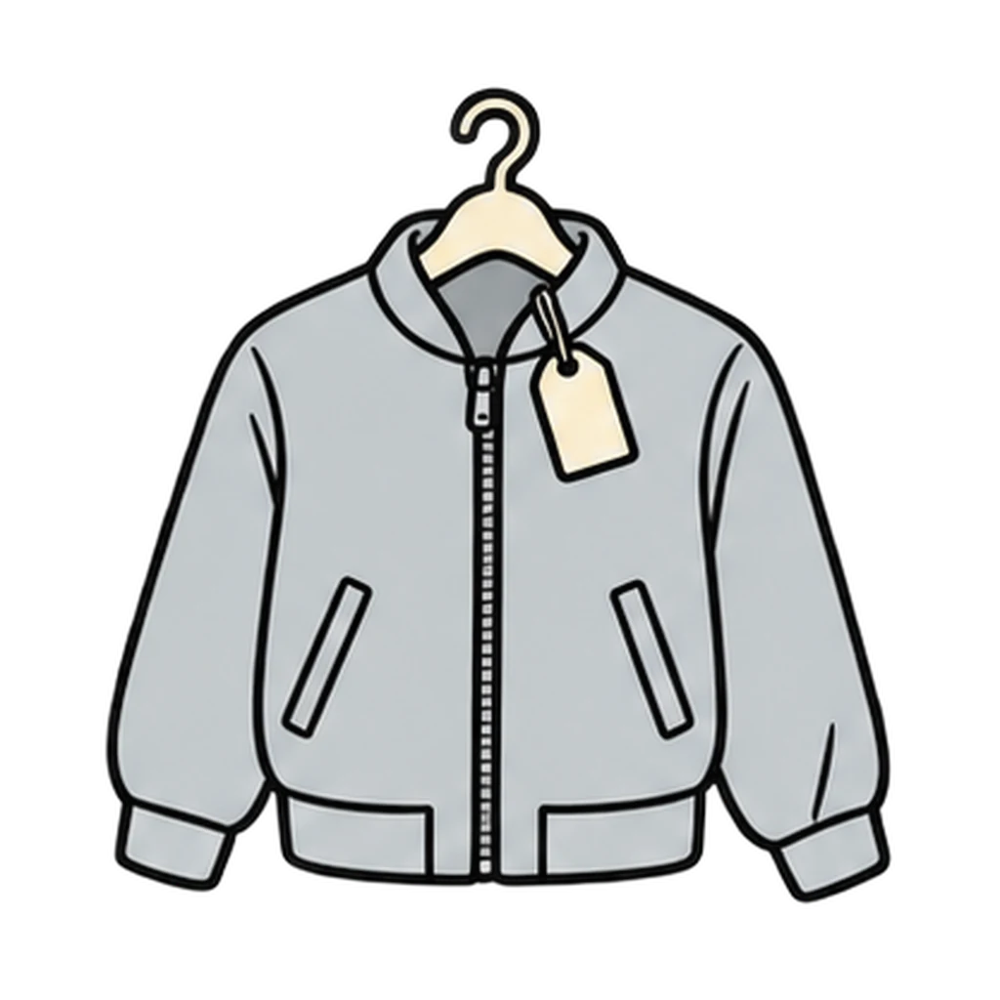
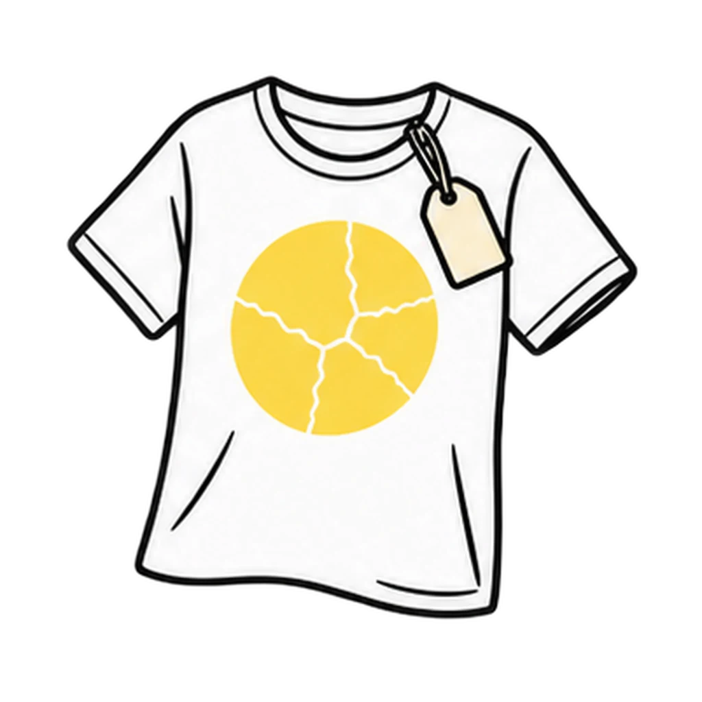

Reviews Lesson 5.13, Lesson 5.12. Reviews Lesson 5.13, with the four store checks from Lesson 5.12 folded into the inspection sort. Round 1 is every cost per wear problem that appears in the unit (the three worked problems, the two do nows from 5.14 and 5.19, the review bank card, the trade-off task, and the grade 8 stretch), always price divided by wears, with the unit written on every choice; the one distractor that is a named mistake, 3.33 wears per dollar, gets the lesson's own answer in the feedback. Round 2 is the good-or-fail column of Handout 05.13 Part 2 plus the label check from Handout 05.12. It does not touch pay stubs or need versus want, which Paycheck Puzzle covers, and it does not read a nutrition label. Use it as the Lesson 5.14 Day 2 opener if the 5.13 exit cards said cost per wear was shaky, since the Consumer Comparison Task requires the math, and again in the Unit 5 review before the test. Every dollar figure is the handout's own and the handout says to refresh prices before teaching, so refresh the game when you refresh the sheet.

Worth the Wear
A price and a number of wears appear. Tap the cost per wear from four choices. Then a finding from a garment inspection appears, and you tap it into A good one or A fail.
How to play
- Cost per wear = price divided by the number of times worn. The answer is in dollars per wear.
- three other dollar amounts from the same list, and once per round the named mistake, 3.33 wears per dollar, which the feedback calls a different rate and not the one a buyer compares





Done
The ones to study:
Worth knowing by heart:
- Which number goes on top: the price. Price divided by wears, and write the unit
- The five factors: fiber, seam type, stitches per inch, reinforcement at stress points, buttons and closures
- Count the stitches on the seam that holds the garment together, not the decorative topstitching
- The four store checks from Lesson 5.12: seam strength, fabric weight, stitch density, the label